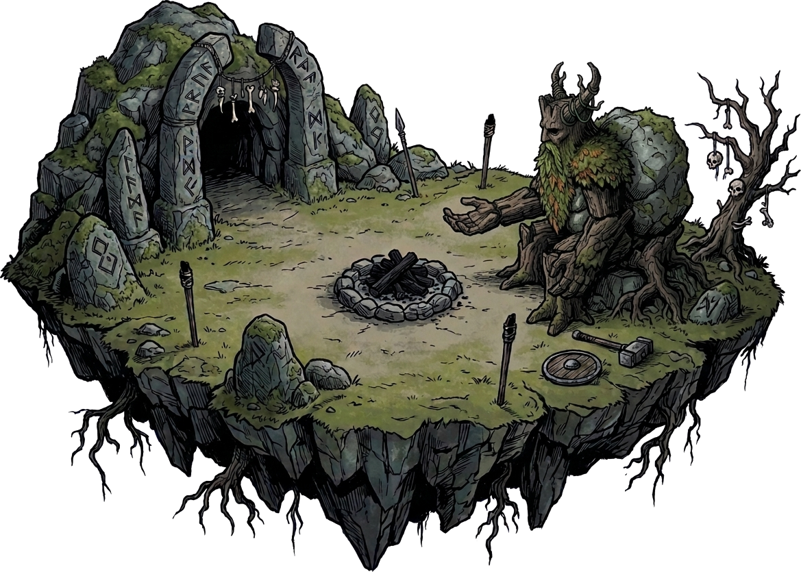
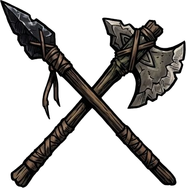

TRIBOS ANCESTRAIS


Arraste para explorar • Use + / − ou pinça para zoom

Andrei Barbuto
Autor & Idealizador
Olá! Meu nome é Andrei, e vou contar aqui como me tornei apaixonado por histórias! Tudo começou com os desenhos animados que assistia todos os dias e as idas ao cinema com meus pais. Cresci influenciado pelo Goku de DBZ e por inúmeros filmes de Hollywood. Hoje, sou um consumidor de histórias de todos os tipos, como livros, mangás, séries e filmes. Histórias sempre me ajudaram a entender melhor o mundo, e por isso as admiro.
Nunca me canso de assistir a um personagem brilhando na tela depois de ter batalhado tanto. É sempre inspirador absorver uma boa história.
Atualmente, estudo para me tornar programador e, nas horas vagas, me dedico a escrever minha primeira narrativa, "Tribos Ancestrais". A história nasceu de muitas caminhadas pelas ruas com o fone de ouvido no máximo e aquela boa música de ação. Não sei ao certo quando comecei a querer escrever, e mesmo que soubesse, no início, minhas ideias eram apenas personagens malucos pulando por aí. Comecei a escrever os primeiros capítulos de "Tribos Ancestrais" durante a pandemia, enquanto fazia alguns cursos de criação literária, juntamente com muitos vídeos do YouTube. Todo esse processo sempre foi divertido para mim, e, apesar das dificuldades, é isso que me move até hoje!
Bom... é isso. Espero que gostem de "Tribos Ancestrais"!

Está curtindo?
Ajude a história a virar mangá
Iniciamente, criei a história de "Tribos ancestrais" para ser no formato de livro, totalmente escrita e sem imagens. Um tempo depois, comecei a criar imagens com IA e mudei completamente de ideia. A história começou a fazer muito mais sentido se fosse um mangá do que um livro. Então, decidi que começaria a aprender a desenhar para transformar essa obra em um mangá.
Se você está curtindo todo o conteúdo e quer ver essa história virar um mangá de verdade, pode fazer uma doação para me ajudar a aprender a desenhar e continuar criando mais!
Obrigado por tudo galera!!